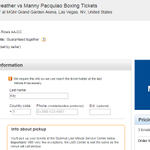
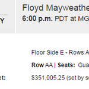
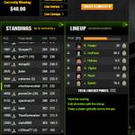
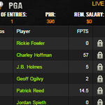

Chochie McRobbinsView profile
@chochiemcrobbin




Tweets
- Tweets
- Tweets & replies
- Photos & videos
@chochiemcrobbin is blocked
Are you sure you want to view these Tweets? Viewing Tweets won't unblock @chochiemcrobbin.
Chochie McRobbins retweeted
The NewMe Experience https://meetlikeminds.wordpress.com/2015/06/02/the-newme-experience … pic.twitter.com/nlLB3khUCk
1 retweet 1 favoritelikeminds inc travels to san fran tomorrow for a week.... grindin
0 retweets 0 favoritesYa well I just saw a duck...all by itself on walkin up humboldt
0 retweets 0 favoritesDUCKS FLY TOGETHER
0 retweets 1 favoriteRodney Carrington pabst it up
0 retweets 0 favoritesyou haven't tweeted in a while....
0 retweets 0 favoriteschochiemcrobbin is officially strapped up sw sd40
0 retweets 0 favoritesmemorial weekend ..get outside
0 retweets 0 favorites
0 retweets
0 favorites
Chochie McRobbins retweeted
davis and perea still makin headlines
0 retweets 0 favorites
Chochie McRobbins retweeted
Aaron Rodgers wins on and off the field, landing one of the "World's Hottest Girlfriends": http://w7241.ranktank.co/uncategorized/university-and-college-online-degrees … pic.twitter.com/HboR6kDzQc
8 retweets 23 favoritescounsel 2-1 ...put the vaccum away ...brewers no longer suck
0 retweets 0 favorites
You followed
Luke Clum,
'47,
Matthew Boyan and
11 others
TA KEY LAH...celebratin because your aloud to for taking spanish in high school
0 retweets 1 favorite"Mayweather will be wearing a $25,000 mouthguard for the fight, incorporated with diamond dust, gold flakes, and a $100 bill cut-out. "
0 retweets 0 favoritesshrimp scampi for lunch...dog you covered it in alfredo...now its ruined
0 retweets 0 favorites
You haven't tweeted yet.
Twitter may be over capacity or experiencing a momentary hiccup.
Visit Twitter Status for more information.
You followed
Who to follow
· · View all-
#BreakYouMake
Share your break with @ChobaniPromoted by Chobani
-
#StanleyCupFinal
No-Look Goal Starts off Cup Final21.2K Tweets about this trend
-
#ComplimentYourselfIn4Words
28.8K Tweets about this trend
-
#FreshmanAdvice
One in Five Female College Freshman Get Raped - I4U News389K Tweets about this trend
-
#DuggarInterview
Fox News gives a sneak peek into the Duggar interview: What did it...Just started trending
-
Versteeg
Bryan Bickell out, Kris Versteeg in for Blackhawks4,654 Tweets about this trend
-
#IHaveGeekCredBecause
Just started trending
-
Mark Trumbo
Mark Trumbo doesn't fix Mariners problem - SweetSpot - ESPNJust started trending
-
Fallout 4
Fallout 4 Officially Revealed With In-Game Trailer - IGN240K Tweets about this trend
-
Mike D'Antoni
Sources: Mike D’Antoni, Nuggets discuss coaching vacancy1,112 Tweets about this trend
-
Mad Max
Imperator Furiosa of 'Mad Max' is the ultimate tampon spokesperson22.1K Tweets about this trend